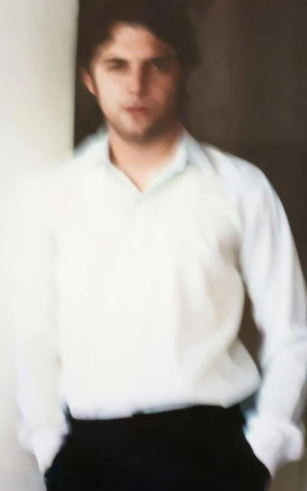
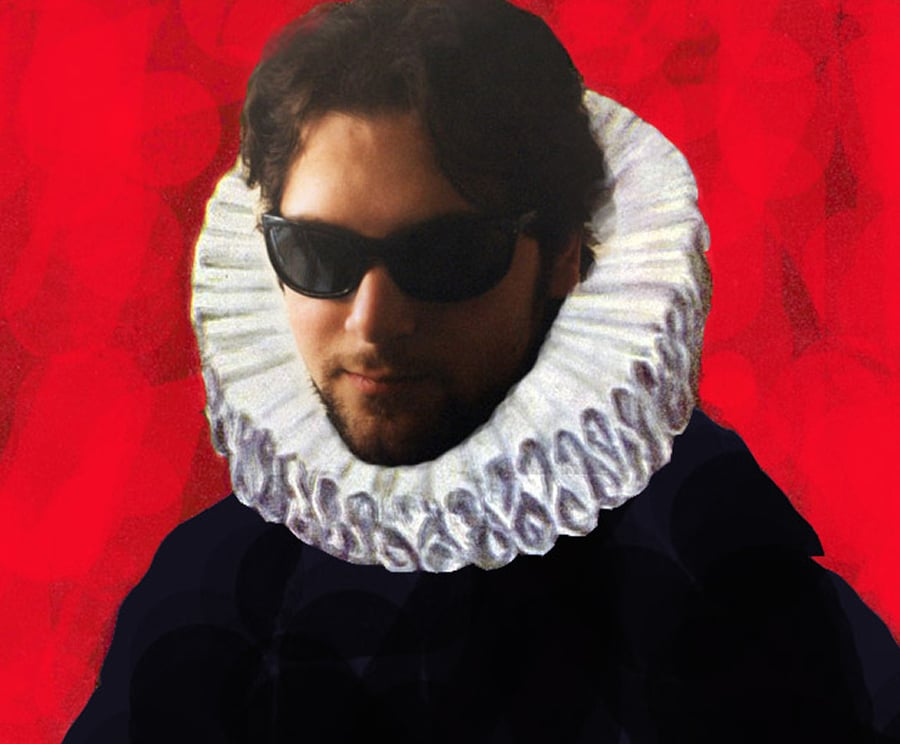

Поэт, прозаик, философ, художник, драматург, композитор...

автор, который не помещается в один жанр
Эмиль Ашотович Петросян родился 30 сентября 1977 года в Ереване. Он окончил Армянский инженерный университет и имеет степень кандидата экономических наук. С 2003 года живёт и работает в Москве.
Литературой Петросян серьёзно занимается с 1999 года, хотя его творческая история началась значительно раньше: изобразительным искусством и музыкой он занимается с детства. В 1999 году вместе с Кареном Карсляном он организовал музыкальный авангард-дуэт Lege Artis, некоторые записи которого сегодня представлены на авторском сайте.
При этом определять Петросяна только как поэта было бы так же неправильно, как и только как художника. На собственном сайте он собрал большую литературную вселенную, в которой рядом существуют романы, пьесы, рассказы, миниатюры и другие экспериментальные формы.
Среди них — «Проблема наблюдателя», «ЭМАРУ», «Манускрипт Петросяна», «Нейрокапитализм», «Офис», «Цзи Ляо», «Cogito», «Zuihitsu», «S.U.P.E.R.», «Forms of Living», «Fragments», «Present Indefinite», «Внутренний сад», «STREAM», «Фрактальный человек», «LiterFUsion», «CyberFUsion», «Yerevan++» и множество других работ. Отдельно представлены пьесы и тексты, не укладывающиеся в привычную жанровую классификацию.
Его проза может быть предельно короткой, абсурдистской и построенной на неожиданном повороте мысли. В опубликованном цикле Other 101 stories одна история может занимать всего несколько строк, превращаясь из бытовой ситуации в абсурдную интеллектуальную шутку. При этом за внешней простотой часто появляется вполне философский вопрос — о человеке, сознании, случайности или самой природе реальности.
Поэзия устроена похожим образом. Петросян использует простые слова и короткие строки, но соединяет их неожиданным образом: рядом оказываются детские воспоминания, город, научные понятия, эволюция, музыка, запахи, будильник, работа и ощущение времени. Исследователи его творчества отмечают именно это сочетание минимализма и концептуальной насыщенности.

Показательно и название его собственного сайта — «texts, music & arts». Здесь литература не отделена от остальных видов творчества: поэзия соседствует с прозой, музыка — с живописью, а философские идеи свободно переходят из одного медиума в другой.
На сайте сейчас представлены и новые работы: среди последних публикаций — поэзия «Доказательство недоказуемого», тексты «Проблема наблюдателя», «Эмару», «Нейрокапитализм», «Остаточные явления», а также музыкальные композиции и новые художественные работы.
Петросян публиковался в литературных изданиях и антологиях, в том числе в «Освобождённом Улиссе» — антологии современной русской поэзии за пределами России, а также в антологиях «Российские поэты» и «Современная поэзия», альманахе «Черновик» и сетевых литературных изданиях.
Наверное, точнее всего его творчество описывает не перечень профессий, а постоянное движение между ними. Петросян может начать с литературного текста, перейти к философскому вопросу, выразить ту же мысль через изображение или музыку — и нигде не обязан останавливаться на одном жанре.
Поэт, прозаик, философ, художник, драматург, композитор — в данном случае это не набор титулов, а разные инструменты одного автора, который уже много лет исследует человека, сознание и окружающую его реальность.